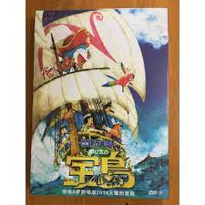

大雄的金銀島

2018年上映的哆啦A夢電影，描寫前往太平洋上突然出現的金銀島探險的哆啦A夢一行人的故事。本作的導演是參與動畫系列製作的今井一曉，這也是他首次在哆啦A夢電影中擔任導演。編劇則是知名電影製作人、並以《如果這世界貓消失了》等作品以小說家而活躍的川村元氣，這是他第一次為哆啦A夢系列親手編劇。在金銀島裡面隱藏的真正的寶物到底是什麼呢？以夢想與浪漫洋溢的大海做為舞台，描繪了滿載豐富樂趣的秘密道具、哆啦A夢與大雄的友情以及親子之間的羈絆，即使大人看也可以很感動的「哆啦A夢電影」系列的魅力，透過本作全部都能體會，值得期待！
「我一定會找到金銀島！」大雄這麼對胖虎宣言後，就向哆啦A夢求救，使用道具「尋寶地圖」尋找金銀島。而地圖指示出來的位置，居然是太平洋上莫名冒出來的新島嶼……。
這部電影以「孩子們的未來」為主軸，以大雄與弗洛克等「孩子」與爸爸與西爾弗等「大人」這2個不同面向發展劇情。在孩子們的角度，大人們的想法沒有考慮到自己；在大人們的角度，大人們有義務為了孩子而犧牲。然而，這並不是簡單的是與非的問題。孩子們是否考慮過大人們的考量背後的出發點是什麼？大人們又是否思考過自己的做法是否真的是為了孩子？